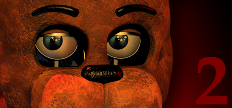
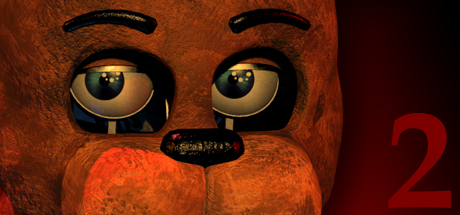
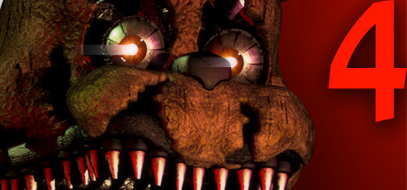
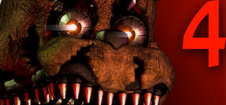
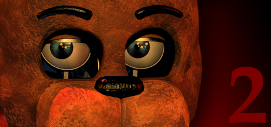
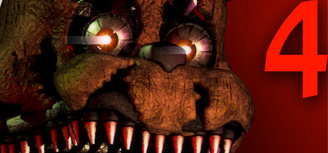

This website is not officially associated with Scott Games, and was created for entertainment purposes only. Five Nights at Freddy's, Scott Games, and the original source code are property of Scott Cawthon. Enjoy!
Scott Games
 

 

This website is not officially associated with Scott Games, and was created for entertainment purposes only. Five Nights at Freddy's, Scott Games, and the original source code are property of Scott Cawthon. Enjoy!

